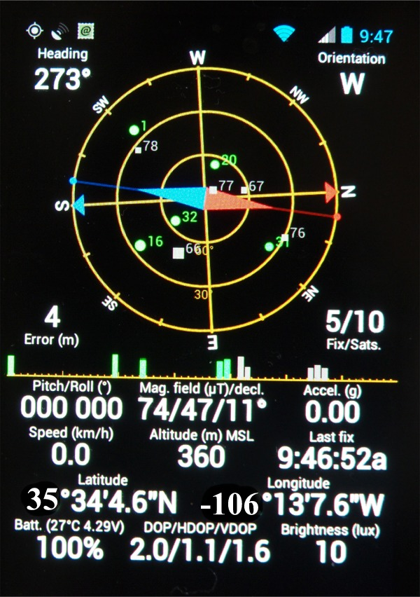
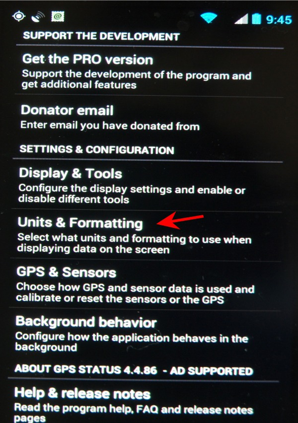
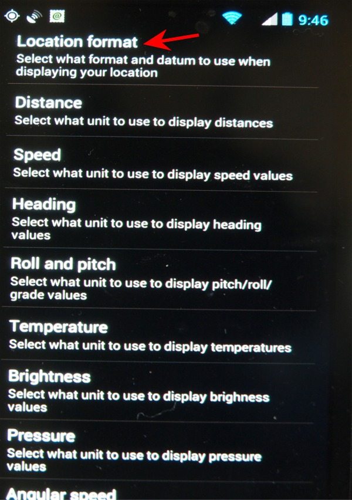
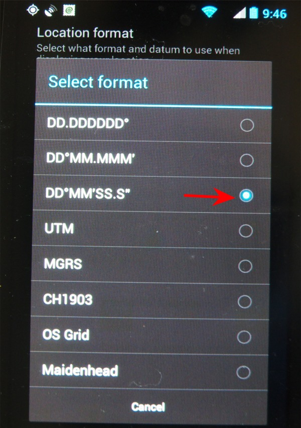

| Using an Android as a GPS |
| There is a very useful APT for the Androids devices call GPS Status. It's Icon is: |
| The Google play webpage for it is here: https://play.google.com/store/apps/details?id=com.eclipsim.gpsstatus2 |
| What is nice is that the GPS formats are selectable. There just happens to be one that matches the Gemini-2. I will go through the 4 screens to set this up. You will first have to goto the Google store and install the APT. It is free. |
|  | This is the main screen of the App. The GPS coordinates on this screen are not the default format, and also do not represent anyplace in particular. |
|  | Use the Phones Main select button and select setting to see this screen. Select the Units and Formatting selection. |
|  | Now you need to select location format. This will take you
to the next screen. |
|  | Now select the DD MM SS.S |
| Go back to the Main Screen. |